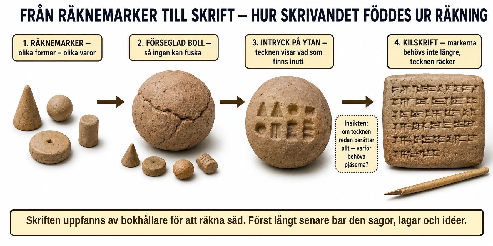

Standardtexten säger att skriften växte fram ur behovet av att hålla ordning — att de första tecknen handlade om räkning och bokföring, inte om sagor. Det stämmer, och den verkliga historien om hur det gick till är nästan som en detektivgåta.

Problemet: hur minns man vem som äger vad? Tänk dig ett tempel i Mesopotamien för 6 000 år sedan. Det tar emot spannmål, boskap och varor från hundratals människor. Ingen kan hålla allt detta i huvudet. Man behöver ett sätt att bokföra — men skriften finns inte ännu. Vad gör man?
Lösningen: små lerpjäser. Arkeologer har hittat mängder av små föremål i lera, i olika former: koner, kulor, cylindrar, skivor. Länge visste ingen vad de var. Forskaren Denise Schmandt-Besserat lade märke till att formerna återkom överallt i regionen under tusentals år — och listade ut svaret. Det var räknemarker. En viss kon betydde ett visst mått spannmål. En kula betydde ett annat. En cylinder kanske ett djur. När någon lämnade in tio säckar säd, la man undan tio pjäser av rätt sort. Enkelt, konkret, och det krävde ingen skrift alls.
Nästa steg: en boll att lita på. Men hur bevisar man vad man kommit överens om? Lösningen blev genial: man la in räknemarkerna i en ihålig lerboll och förseglade den. Nu kunde ingen fuska genom att lägga till eller ta bort pjäser i efterhand — bollen var stängd. Men det uppstod ett nytt problem: för att se vad som fanns inuti måste man krossa bollen. Så började man, innan man förslöt den, att trycka pjäsernas former mot bollens mjuka yta. Utanpå kunde man då läsa vad som fanns inuti.
Och så — språnget. Här kommer insikten som förändrade allt. Om tecknen på utsidan redan berättar vad som finns inuti… varför behöver man då pjäserna alls? Varför inte bara trycka tecknen på en platt lerbit och strunta i bollen och markerna? Just så gick det till. Föremålen försvann, tecknen blev kvar, och ur dem växte kilskriften fram för omkring 5 000 år sedan — världens äldsta kända skrift, uppkallad efter de kilformade intryck man gjorde med en vass griffel i våt lera.
Varför det är stort. Skriften uppfanns alltså inte av en poet eller en berättare. Den uppfanns av bokhållare, för att hålla reda på säd och boskap i ett samhälle som blivit för stort för minnet. Först långt senare började människor använda skriften till annat: lagar, brev, böner, berättelser. Det är värt att minnas nästa gång vi läser om antikens diktare och filosofer. När grekerna långt senare tog skriften och förfinade den så att den kunde bära idéer och tankar, byggde de vidare på något som en gång uppfanns för att räkna säckar med korn vid en flod i Mesopotamien.